Até aqui a Jambu tinha produto e rosto. Agora ela precisa falar. E uma marca fala com regras: o verde é um verde específico, o título usa sempre a mesma família de letra, o slogan é escrito sempre do mesmo jeito. Um cliente de verdade chega com um manual de marca (brand book) e espera que as peças o sigam. Por muito tempo isso ficava fora do alcance da IA: texto saía com letras inventadas e a cor era “algum verde”. Os modelos atuais escrevem certo e aceitam o código exato da cor. Este módulo ensina a pedir as duas coisas.
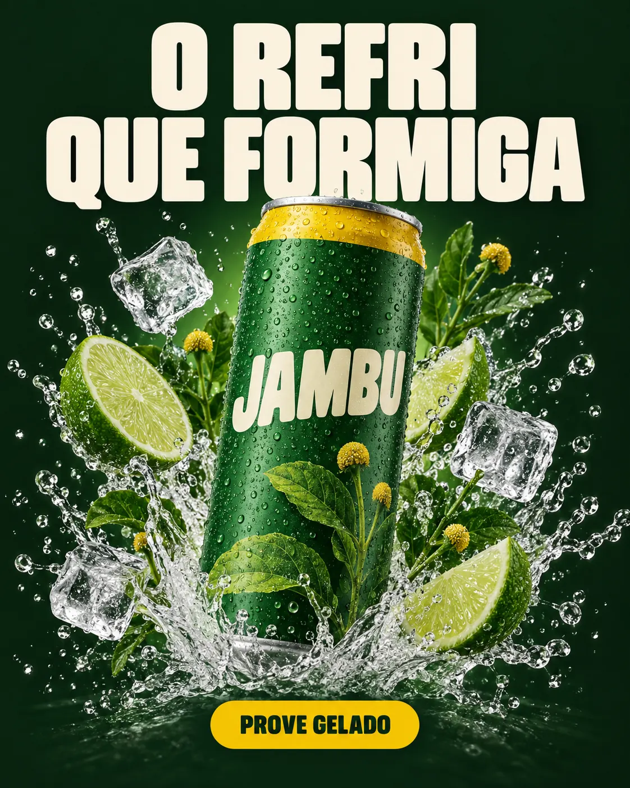
Prompt usado
Vertical 4:5 social media feed ad for the fictional craft soda JAMBU, with a clear three-level visual hierarchy. LEVEL 1, top: the headline 'O REFRI QUE FORMIGA' on two lines ('O REFRI' / 'QUE FORMIGA') in a heavy condensed rounded uppercase sans-serif, cream (#F6F0E1), very large. LEVEL 2, center: a slim matte leaf-green (#2F7D32) aluminum can with a bright yellow (#F2C200) band around the top and the wordmark 'JAMBU' in bold rounded cream uppercase letters, covered in cold droplets, bursting out of a splash of sparkling water, lime slices, ice and fresh jambu sprigs with small yellow flower buds. LEVEL 3, bottom: a small yellow (#F2C200) pill-shaped button with the text 'PROVE GELADO' in very dark green (#12301A). Background: solid very dark green (#12301A) with a subtle radial glow behind the can. Crisp studio product lighting, commercial beverage advertising. Every text spelled exactly as written, no other text.
A peça-mestra da Jambu para o feed (4:5): título O REFRI QUE FORMIGA em creme no topo, a lata com respingo, limão, gelo e jambu no centro, e o botão amarelo PROVE GELADO embaixo, sobre o verde-escuro da marca. Os três textos saíram escritos exatamente como foram pedidos. Tudo o que está nela — cores, letra, ordem de leitura — foi decidido no prompt, e é isso que vamos destrinchar.
1O sistema da marca: paleta HEX, tipografia e slogan
O que é
Paleta Jambu
| Nome | HEX | Uso | Proporção na peça |
|---|---|---|---|
| Verde Jambu |
#2F7D32
|
a lata, títulos sobre fundo claro, logotipo | 30% |
| Verde Igapó |
#12301A
|
fundos escuros, texto de apoio | 60% (quando o fundo é escuro) |
| Creme Tapioca |
#F6F0E1
|
fundos claros, títulos sobre fundo escuro | 60% (quando o fundo é claro) |
| Amarelo Flor |
#F2C200
|
chamada (botão), destaques, faixa da lata | 10% |
| Açaí |
#4A1E3F
|
edições especiais, raramente | só em edição limitada |
Tipografia e voz
| Elemento | Regra Jambu | Como vai no prompt |
|---|---|---|
| Títulos | sans-serif condensada, pesada, cantos arredondados, sempre em maiúsculas | heavy condensed rounded uppercase sans-serif |
| Texto de apoio | sans-serif geométrica, limpa, em minúsculas | clean geometric sans-serif |
| Slogan | O REFRI QUE FORMIGA: 4 palavras, sem acento, sempre em maiúsculas |
'O REFRI QUE FORMIGA' entre aspas |
| Chamada (CTA) | verbo + benefício, 2 palavras: PROVE GELADO | botão em forma de pílula, amarelo, texto verde-escuro |
| Voz | orgulho de Belém com humor; nada de “exótico” ou “selvagem” | orienta imagens e textos de apoio |
Por que aprender
Repare que o slogan foi escolhido também pensando no modelo: quatro palavras curtas, sem acento nem cedilha, fáceis de escrever sem erro. Não é regra de publicidade, é uma decisão prática. Quanto mais curto e simples o texto que precisa sair perfeito, menos refação você faz.
Conceitos-chave em ação
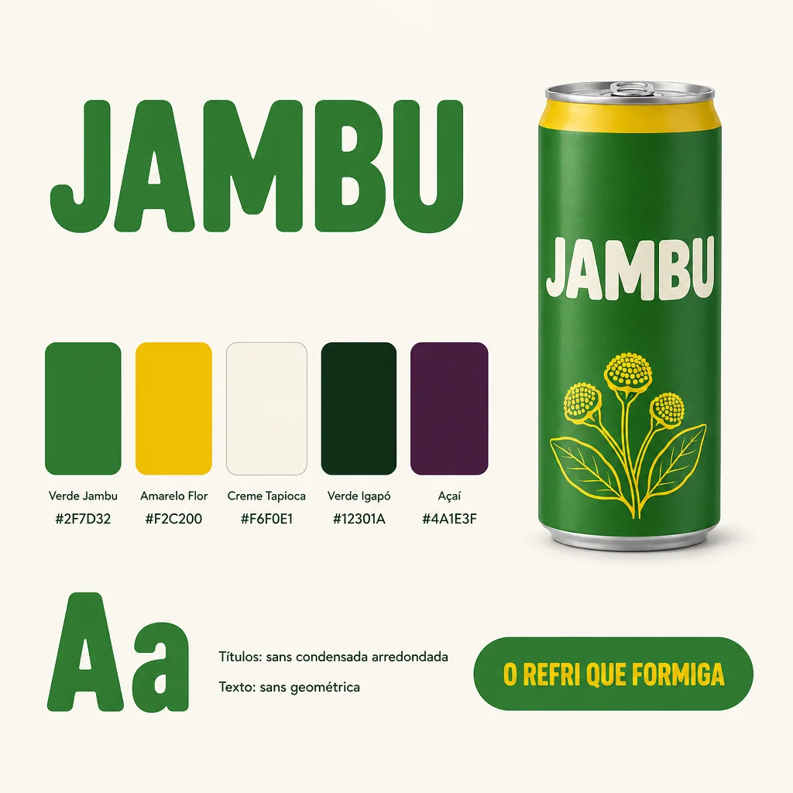
Instrução de edição usada (sobre a imagem-base)
Using this exact can as the hero product, design a one-page BRAND BOOK board, flat graphic design layout on an off-white (#F6F0E1) background. Top-left: the wordmark 'JAMBU' in a heavy condensed rounded uppercase sans-serif, leaf green. Right side: the can packshot, unchanged. Middle row: five rounded color swatches, each with its name and HEX code printed below in a small clean geometric sans-serif: 'Verde Jambu #2F7D32', 'Amarelo Flor #F2C200', 'Creme Tapioca #F6F0E1', 'Verde Igapó #12301A', 'Açaí #4A1E3F'. Bottom-left: a large typography sample 'Aa' with two small labels: 'Títulos: sans condensada arredondada' and 'Texto: sans geométrica'. Bottom-right: the slogan 'O REFRI QUE FORMIGA' in yellow on a leaf-green pill shape. Generous margins, clear grid. Every text spelled exactly as written, no other text.
O brand book da Jambu em uma página, feito a partir da lata-base: logotipo, a lata, as cinco cores com nome e HEX, uma amostra de letra e o slogan numa pílula. Ele serve para duas coisas: combinar as regras com o cliente e servir de referência anexada nas próximas peças (tópico 5). Confira sempre letra por letra os códigos e os nomes que o modelo escreveu antes de usar a página como referência — nesta, os cinco nomes (com o acento de Igapó e o cedilha de Açaí), os cinco HEX e as duas linhas de tipografia saíram corretos.
2Texto perfeito na imagem
O que é
Para texto na imagem, o prompt precisa responder a cinco perguntas: o quê (as palavras exatas, entre aspas), com que letra (a família descrita), de que cor (HEX), onde (em que área da imagem) e o que mais (nada: no other text).
✓ Pedido de texto que funciona
- palavras exatas entre aspas:
'O REFRI QUE FORMIGA' - quebra de linha dita:
'O REFRI' / 'QUE FORMIGA' - família descrita: heavy condensed rounded uppercase sans-serif
- cor em HEX e posição: leaf green #2F7D32, in the empty space to her left
- trava: No other text. Keep the woman, the can and the background.
✗ Pedido de texto que falha
- “coloque um slogan legal”
- frases longas, com vírgulas e acentos, em fonte pequena
- “use a fonte da marca” sem anexar nem descrever a fonte
- esquecer de proibir texto extra (aparecem placas e rótulos inventados)
- pedir título, subtítulo, preço e rodapé na mesma geração
Por que aprender
O modelo escreve bem, mas não lê pensamento. Quando a instrução é vaga, ele completa a lacuna com o que parece provável: um slogan em inglês, uma frase genérica, uma fonte qualquer. Isso não é “erro” dele. É a falta de uma decisão sua.
Conceitos-chave em ação
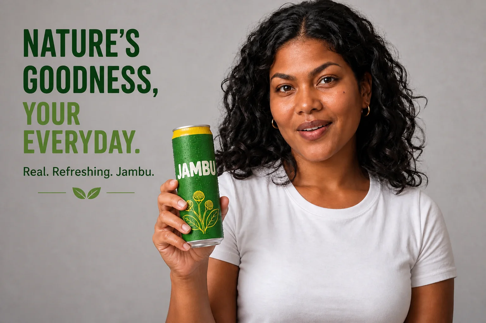
Instrução de edição usada (sobre a imagem-base)
Add a slogan to this image.
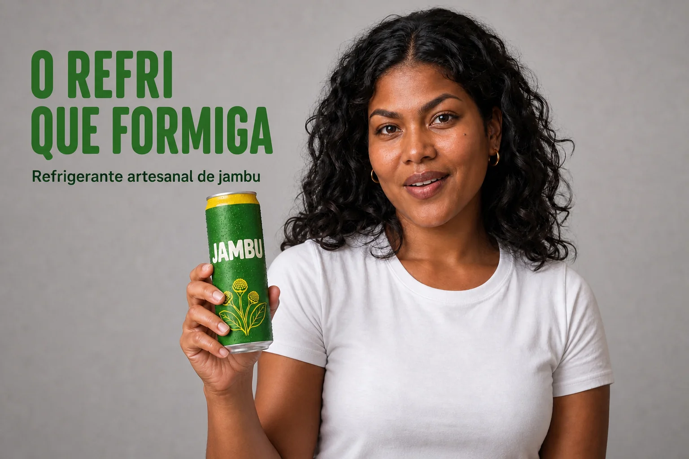
Instrução de edição usada (sobre a imagem-base)
Add campaign text without changing the woman, the can or the background. In the empty background space to her left side of the frame, write the headline in exactly these words, on two lines: 'O REFRI' / 'QUE FORMIGA' — heavy condensed rounded uppercase sans-serif, leaf green #2F7D32, large. Below it, smaller, in a clean geometric sans-serif, very dark green #12301A: 'Refrigerante artesanal de jambu'. Generous margins. No other text.
Duas edições da mesma imagem (Maíra com a lata, do módulo 1-2). À esquerda, com cinco palavras de instrução, o modelo escolheu sozinho o texto, a língua, a letra e o lugar: saiu um slogan genérico em inglês (“Nature's goodness, your everyday.”), que não é o da marca. À direita, o pedido completo: título em duas linhas, letra condensada em maiúsculas, verde #2F7D32, linha de apoio menor em #12301A, no espaço vazio ao lado dela, e nada além disso. Abra as duas instruções e compare o tamanho: o texto extra do prompt é o que garante a precisão.
3Cor por HEX: atualizar a marca sem refazer a peça
O que é
Dá para escrever a cor como nome (“dark green”), como nome de marca (“Verde Igapó”) ou como código (#12301A). O mais seguro é nome + código: o nome dá a ideia geral, e o código aproxima o tom. Na edição, diga quais elementos mudam de cor e liste o que fica.
Troca de cor numa peça pronta
Objetivo: Atualizar as cores da marca sem mexer em produto, texto e layout.
Brand color update: change ONLY two colors. The background becomes <nome> <#HEX> (keep the subtle glow behind the product). The headline text becomes <nome> <#HEX>. Keep the product, the splash, the exact text content, the typography, the layout and the button identical.
Como verificar: Compare lado a lado com a original: só as duas cores mudaram? O texto continua igual, letra por letra? Para conferir o tom, use um conta-gotas de cor (qualquer editor de imagem) e compare com o HEX pedido.
Por que aprender
Em trabalho de cliente, “troca o fundo para a cor nova do manual” acontece toda semana. Refazer do zero significa perder a lata, o respingo e o texto que já estavam aprovados. Com a edição, a peça continua a mesma e só a cor muda, o que também facilita a aprovação.
Conceitos-chave em ação
Prompt usado
Vertical 4:5 social media feed ad for the fictional craft soda JAMBU, with a clear three-level visual hierarchy. LEVEL 1, top: the headline 'O REFRI QUE FORMIGA' on two lines ('O REFRI' / 'QUE FORMIGA') in a heavy condensed rounded uppercase sans-serif, cream (#F6F0E1), very large. LEVEL 2, center: a slim matte leaf-green (#2F7D32) aluminum can with a bright yellow (#F2C200) band around the top and the wordmark 'JAMBU' in bold rounded cream uppercase letters, covered in cold droplets, bursting out of a splash of sparkling water, lime slices, ice and fresh jambu sprigs with small yellow flower buds. LEVEL 3, bottom: a small yellow (#F2C200) pill-shaped button with the text 'PROVE GELADO' in very dark green (#12301A). Background: solid very dark green (#12301A) with a subtle radial glow behind the can. Crisp studio product lighting, commercial beverage advertising. Every text spelled exactly as written, no other text.
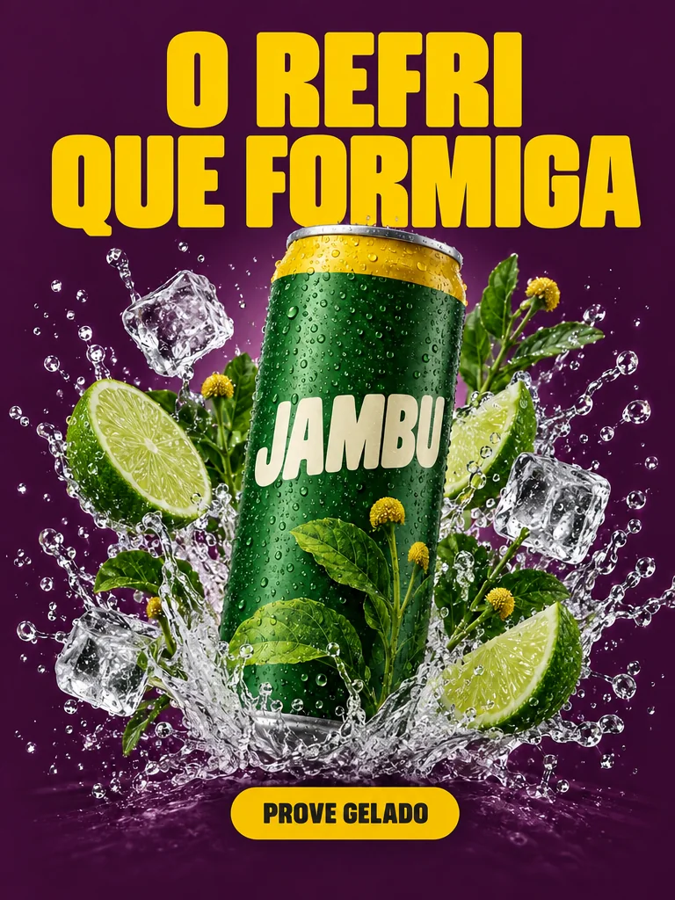
Instrução de edição usada (sobre a imagem-base)
Brand color update: change ONLY two colors. The background becomes Açaí purple #4A1E3F (keep the subtle glow behind the can). The headline text becomes Amarelo Flor yellow #F2C200. Keep the can, the splash, the exact text content, the typography, the layout and the button identical.
A da direita é uma edição da peça-mestra com uma única instrução: fundo para Açaí #4A1E3F e título para Amarelo Flor #F2C200, mantendo lata, respingo, texto, letra e botão. É assim que nasce uma “edição limitada” sem nova sessão de fotos. (Detalhe de formato: o gerador usado não entrega 4:5, então esta e as outras edições da peça saíram em 3:4, um pouco mais estreitas que a original — numa entrega real, confira a proporção final antes de publicar.)
4Tipografia: descrever a letra que você quer
O que é
Vocabulário tipográfico para o prompt
| Termo | O que é | Tom que passa |
|---|---|---|
| serif | com “pezinhos” nas pontas das letras | tradição, editorial, sofisticação |
| sans-serif | sem pezinhos | moderno, direto, limpo |
| condensed | letras estreitas e altas | impacto em pouco espaço, energia |
| heavy / bold / light | peso (grossura) do traço | força × delicadeza |
| rounded | cantos arredondados | amigável, bebida, infantil se exagerar |
| uppercase / lowercase | caixa alta / caixa baixa | grito × conversa |
| script / hand-lettered | letra cursiva ou desenhada à mão | pessoal, artesanal |
| hand-painted sign lettering | letra de pintor de letreiros | popular, regional, feito à mão |
Por que aprender
Você pode citar o nome de uma fonte conhecida (muitas fontes livres são reconhecidas pelos modelos), mas o resultado é uma aparência parecida, não o arquivo da fonte. Descrever a família em palavras funciona em qualquer modelo e deixa claro o que você quer. Para o logotipo final, use o arquivo de verdade no editor.
Conceitos-chave em ação
Prompt usado
Vertical 4:5 social media feed ad for the fictional craft soda JAMBU, with a clear three-level visual hierarchy. LEVEL 1, top: the headline 'O REFRI QUE FORMIGA' on two lines ('O REFRI' / 'QUE FORMIGA') in a heavy condensed rounded uppercase sans-serif, cream (#F6F0E1), very large. LEVEL 2, center: a slim matte leaf-green (#2F7D32) aluminum can with a bright yellow (#F2C200) band around the top and the wordmark 'JAMBU' in bold rounded cream uppercase letters, covered in cold droplets, bursting out of a splash of sparkling water, lime slices, ice and fresh jambu sprigs with small yellow flower buds. LEVEL 3, bottom: a small yellow (#F2C200) pill-shaped button with the text 'PROVE GELADO' in very dark green (#12301A). Background: solid very dark green (#12301A) with a subtle radial glow behind the can. Crisp studio product lighting, commercial beverage advertising. Every text spelled exactly as written, no other text.
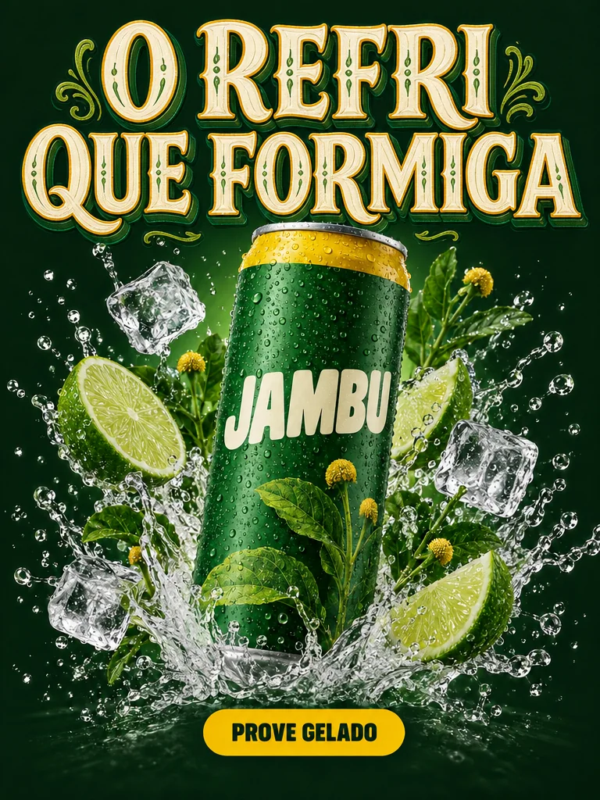
Instrução de edição usada (sobre a imagem-base)
Change ONLY the headline typography to hand-painted Amazonian riverboat lettering: ornamental shaded capital letters with a painted drop shadow and small decorative flourishes, as painted by a traditional sign painter, cream with a thin yellow outline. Keep exactly the same words 'O REFRI QUE FORMIGA' on the same two lines, and keep the can, colors, layout and button identical.
Edição da peça-mestra que troca só a letra do título: de sans-serif condensada e arredondada para letra de barco pintada à mão, com sombra e floreios, creme com contorno amarelo. As palavras, a lata, as cores e o botão foram mantidos. A mesma frase passa a soar mais regional e mais festiva: a letra também comunica.
5Brand book como referência
O que é
Quando o cliente tem um manual de marca em PDF, tire capturas de tela das páginas que interessam (paleta com HEX, tipografia, logotipo, exemplos aprovados) e anexe como referência junto com o produto. Diga no prompt qual o papel da imagem: “use image 2 as the strict reference for colors, typography and slogan”.
Preparando as referências de marca
- Uma captura só com a paleta e os códigos HEX, legíveis.
- Uma captura com a tipografia (nome e exemplo de título e texto).
- O logotipo sobre fundo liso, em boa resolução.
- Uma ou duas peças já aprovadas pelo cliente, para mostrar o “jeito” da marca.
- No prompt: o papel de cada imagem + o que a peça nova deve ter.
Por que aprender
Um brand book anexado resolve várias regras de uma vez e reduz a chance de o modelo inventar. Ele não dispensa a conferência, mas faz as peças saírem dentro do sistema desde a primeira tentativa, o que é o que importa quando são vinte peças.
Conceitos-chave em ação
Instrução de edição usada (sobre a imagem-base)
Using this exact can as the hero product, design a one-page BRAND BOOK board, flat graphic design layout on an off-white (#F6F0E1) background. Top-left: the wordmark 'JAMBU' in a heavy condensed rounded uppercase sans-serif, leaf green. Right side: the can packshot, unchanged. Middle row: five rounded color swatches, each with its name and HEX code printed below in a small clean geometric sans-serif: 'Verde Jambu #2F7D32', 'Amarelo Flor #F2C200', 'Creme Tapioca #F6F0E1', 'Verde Igapó #12301A', 'Açaí #4A1E3F'. Bottom-left: a large typography sample 'Aa' with two small labels: 'Títulos: sans condensada arredondada' and 'Texto: sans geométrica'. Bottom-right: the slogan 'O REFRI QUE FORMIGA' in yellow on a leaf-green pill shape. Generous margins, clear grid. Every text spelled exactly as written, no other text.
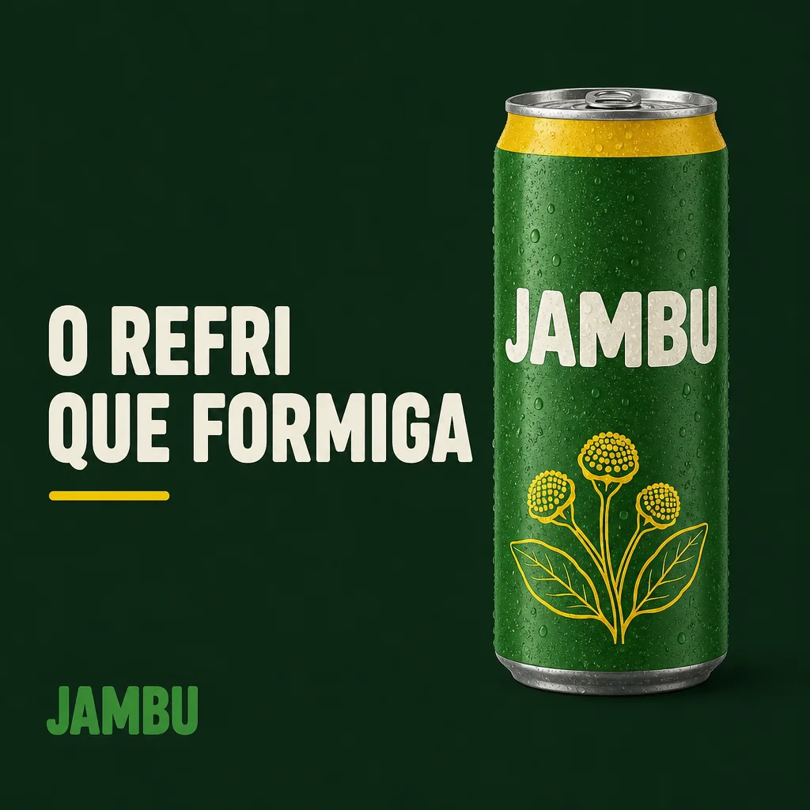
Instrução de edição usada (sobre a imagem-base)
Use this brand book as the strict reference for colors, typography and slogan. Replace the board with a finished square social media post that follows it: background Verde Igapó #12301A; the same can from the board, large on the right side, with cold droplets; the slogan 'O REFRI QUE FORMIGA' on the left in the headline typeface, Creme Tapioca #F6F0E1, with a short Amarelo Flor #F2C200 underline; the wordmark 'JAMBU' small at the bottom-left in leaf green #2F7D32. No other text.
À direita, uma edição que usa o brand book da esquerda como referência rígida e pede um post quadrado: fundo Verde Igapó, a lata grande à direita, o slogan em creme na letra de título, sublinhado amarelo e o logotipo pequeno. As cores e a letra vieram da página de referência, sem precisar repetir cada regra.
6Hierarquia da peça: título, produto, chamada
O que é
Hierarquia visual é decidir o que é lido primeiro, segundo e terceiro. Numa peça de produto, o padrão que funciona é: 1. título (a ideia, grande), 2. produto (a prova, no centro), 3. chamada (a ação, pequena e contrastante). Você cria a ordem com quatro ferramentas: tamanho, posição (de cima para baixo), contraste de cor e espaço vazio em volta.
Como a peça-mestra pediu os três níveis
LEVEL 1, top: the headline 'O REFRI QUE FORMIGA' on two lines ... cream (#F6F0E1), very large.
LEVEL 2, center: a slim matte leaf-green (#2F7D32) aluminum can ... bursting out of a splash ...
LEVEL 3, bottom: a small yellow (#F2C200) pill-shaped button with the text 'PROVE GELADO'
in very dark green (#12301A).
Background: solid very dark green (#12301A) ... Every text spelled exactly as written, no other text.
Por que aprender
Escrever “LEVEL 1 / 2 / 3” no prompt parece burocrático, mas o modelo entende a estrutura: tamanho decrescente, ordem de cima para baixo, a chamada isolada. Sem isso, ele tende a encher a peça, e aí vem o erro mais comum de anúncio amador: tudo do mesmo tamanho, disputando atenção.
Conceitos-chave em ação
Prompt usado
Vertical 4:5 social media feed ad for the fictional craft soda JAMBU, with a clear three-level visual hierarchy. LEVEL 1, top: the headline 'O REFRI QUE FORMIGA' on two lines ('O REFRI' / 'QUE FORMIGA') in a heavy condensed rounded uppercase sans-serif, cream (#F6F0E1), very large. LEVEL 2, center: a slim matte leaf-green (#2F7D32) aluminum can with a bright yellow (#F2C200) band around the top and the wordmark 'JAMBU' in bold rounded cream uppercase letters, covered in cold droplets, bursting out of a splash of sparkling water, lime slices, ice and fresh jambu sprigs with small yellow flower buds. LEVEL 3, bottom: a small yellow (#F2C200) pill-shaped button with the text 'PROVE GELADO' in very dark green (#12301A). Background: solid very dark green (#12301A) with a subtle radial glow behind the can. Crisp studio product lighting, commercial beverage advertising. Every text spelled exactly as written, no other text.
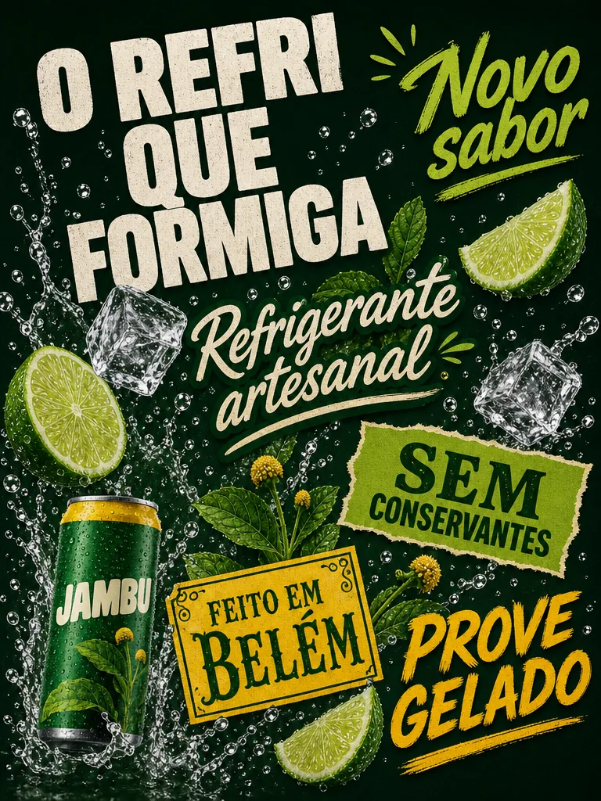
Instrução de edição usada (sobre a imagem-base)
Redesign this ad to show a common mistake — NO visual hierarchy: shrink the can to a small size in the lower-left corner; make the headline 'O REFRI QUE FORMIGA', a subtitle 'Refrigerante artesanal', the text 'PROVE GELADO' and three extra phrases 'Novo sabor', 'Sem conservantes', 'Feito em Belém' all the same medium size, scattered in different positions and angles across the frame, each in a different typeface. Everything competes for attention. Keep the same colors.
A da direita é uma edição feita para mostrar o erro: lata pequena no canto de baixo e seis textos espalhados, cada um numa letra diferente — manuscrita, com serifa, carimbo, pincel. O modelo não deixou todos do mesmo tamanho como foi pedido (o título ainda é o maior), mas o efeito aparece do mesmo jeito: os carimbos “SEM CONSERVANTES” e “FEITO EM BELÉM” e o “PROVE GELADO” em pincel brigam com o título pelo olhar. Faça o teste do olho semicerrado nas duas: na da esquerda você ainda enxerga título → lata → botão; na da direita vira ruído.
7Infográfico e rótulos em outro idioma
O que é
Infográfico de produto (anexe a imagem-base)
Objetivo: Criar uma peça explicativa com rótulos legíveis e o produto fiel.
Turn this exact <produto> into an EXPLODED-VIEW technical infographic in the style of a clean engineering drawing on <cor de fundo #HEX> paper: the <produto> in the center with <uma parte> lifted slightly above it, and around it <N> illustrated ingredients connected to it by thin <cor #HEX> leader lines, each with a label in a clean geometric sans-serif: '<rótulo 1>', '<rótulo 2>', '<rótulo 3>', '<rótulo 4>'. Title at the top: '<TÍTULO>' in <família de letra>, <cor #HEX>. Keep the product design identical. Every text spelled exactly as written, no other text.
Como verificar: Cada rótulo ficou ligado ao ingrediente certo? Todos os textos estão escritos exatamente como pedido, com acento? O produto continua igual à imagem-base?
Por que aprender
Infográfico exige três coisas que os modelos antigos não entregavam juntas: objeto fiel, estrutura organizada e texto correto. Com as três, uma única peça vira banner, post educativo, página de catálogo e, com uma edição, material para outro país.
Conceitos-chave em ação
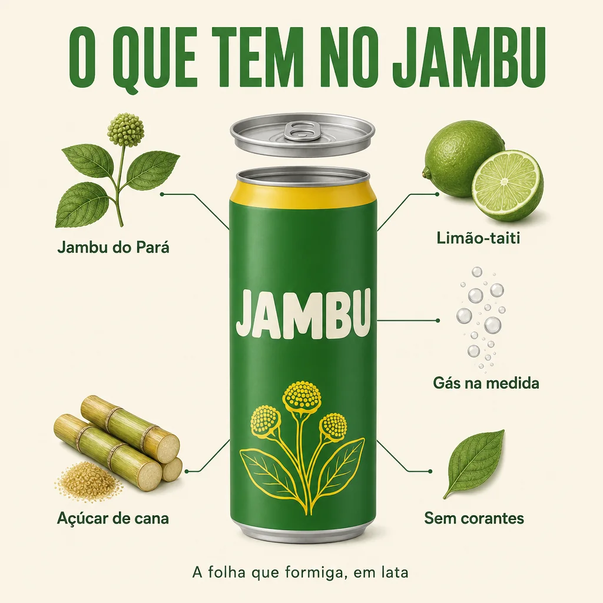
Instrução de edição usada (sobre a imagem-base)
Turn this exact can into an EXPLODED-VIEW technical infographic in the style of a clean engineering drawing on off-white (#F6F0E1) paper: the can in the center with its lid lifted slightly above it, and around it five illustrated ingredients connected to the can by thin very dark green leader lines, each with a label in a clean geometric sans-serif: 'Jambu do Pará', 'Limão-taiti', 'Gás na medida', 'Açúcar de cana', 'Sem corantes'. Title at the top: 'O QUE TEM NO JAMBU' in a heavy condensed uppercase sans-serif, leaf green #2F7D32. Small caption at the bottom: 'A folha que formiga, em lata'. Keep the can design identical. Every text spelled exactly as written, no other text.
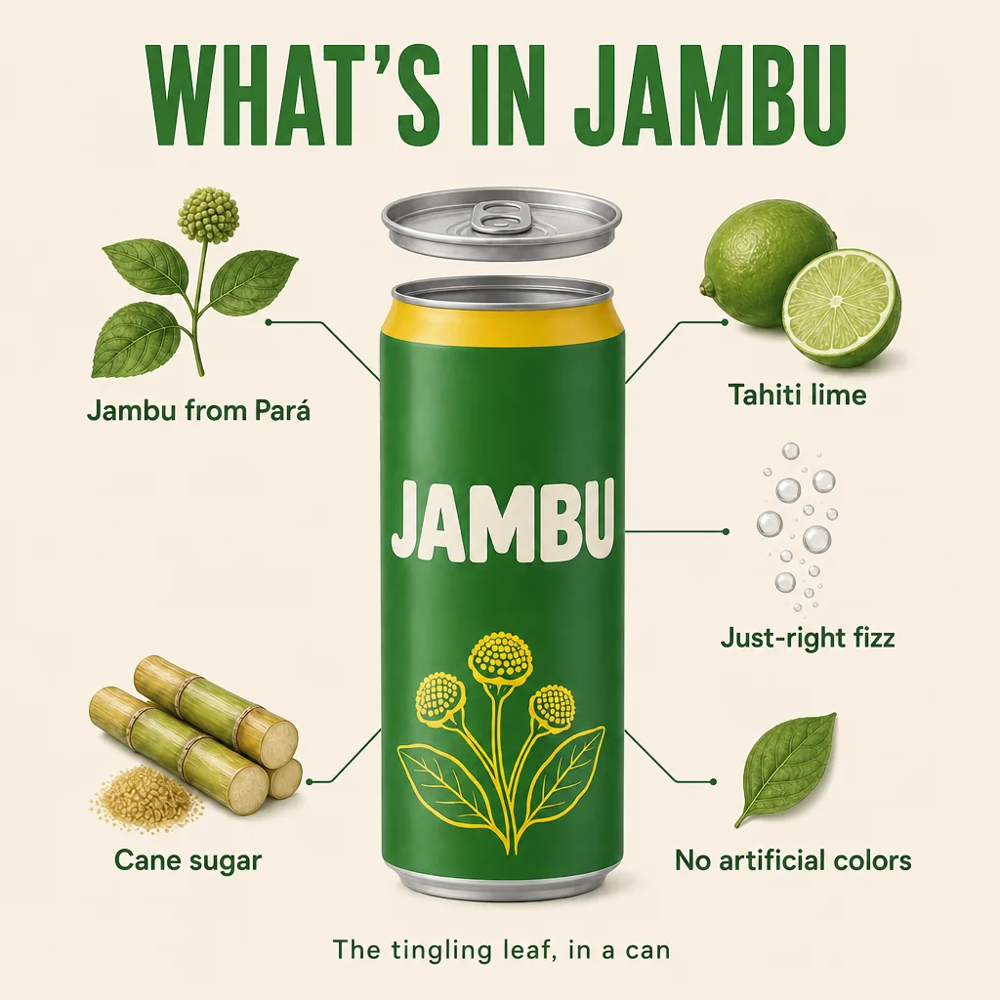
Instrução de edição usada (sobre a imagem-base)
Translate ONLY the text into English, keeping layout, typography, colors, illustrations, leader lines and positions identical: 'O QUE TEM NO JAMBU' → 'WHAT'S IN JAMBU'; 'Jambu do Pará' → 'Jambu from Pará'; 'Limão-taiti' → 'Tahiti lime'; 'Gás na medida' → 'Just-right fizz'; 'Açúcar de cana' → 'Cane sugar'; 'Sem corantes' → 'No artificial colors'; 'A folha que formiga, em lata' → 'The tingling leaf, in a can'. The wordmark JAMBU on the can stays unchanged.
À esquerda, a lata-base transformada em vista explodida: tampa levantada, cinco ingredientes ligados por linhas de chamada e o título O QUE TEM NO JAMBU. À direita, uma edição que só traduz os textos, com a lista de pares “original → tradução” no prompt; o layout, os desenhos e o nome na lata ficam. Para localizar para vários países, repita a edição trocando só a lista.
✓ Localização que funciona
- dar cada par “original → tradução” no prompt
- manter o nome da marca sem tradução
- conferir com um falante nativo antes de publicar
✗ Localização que dá problema
- “traduza para o inglês” sem dizer as frases: o modelo parafraseia
- traduções muito mais longas que o original (não cabem e deformam)
- confiar na ortografia de uma língua que você não lê
8Formatos: do feed 4:5 ao story 9:16
O que é
Formatos que a campanha Jambu usa
| Proporção | Onde | Cuidado |
|---|---|---|
| 1:1 | feed, marketplace, brand book | centro forte; bordas podem ser cortadas em miniaturas |
| 4:5 | feed de redes sociais (ocupa mais tela que o 1:1) | título no terço de cima, chamada embaixo |
| 9:16 | story, reels, vídeo vertical | deixe livres ~14% em cima e ~20% embaixo (interface do app) |
| 16:9 | banner de site, YouTube, storyboard do comercial | texto de um lado, produto do outro |
Por que aprender
Não é só cortar. Um título de duas linhas que cabe no 4:5 fica pequeno no 9:16 se você só esticar o fundo; no vertical, ele rende mais em três linhas, maior. Cada formato pede uma nova diagramação da mesma ideia, com as mesmas cores, a mesma letra e a mesma ordem de leitura.
Conceitos-chave em ação
Prompt usado
Vertical 4:5 social media feed ad for the fictional craft soda JAMBU, with a clear three-level visual hierarchy. LEVEL 1, top: the headline 'O REFRI QUE FORMIGA' on two lines ('O REFRI' / 'QUE FORMIGA') in a heavy condensed rounded uppercase sans-serif, cream (#F6F0E1), very large. LEVEL 2, center: a slim matte leaf-green (#2F7D32) aluminum can with a bright yellow (#F2C200) band around the top and the wordmark 'JAMBU' in bold rounded cream uppercase letters, covered in cold droplets, bursting out of a splash of sparkling water, lime slices, ice and fresh jambu sprigs with small yellow flower buds. LEVEL 3, bottom: a small yellow (#F2C200) pill-shaped button with the text 'PROVE GELADO' in very dark green (#12301A). Background: solid very dark green (#12301A) with a subtle radial glow behind the can. Crisp studio product lighting, commercial beverage advertising. Every text spelled exactly as written, no other text.
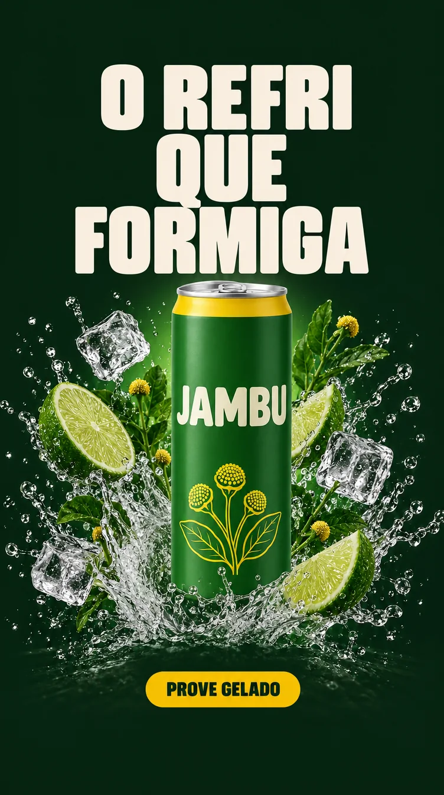
Instrução de edição usada (sobre a imagem-base)
Adapt this exact feed ad into a vertical 9:16 story for the same campaign — re-lay it out for the tall format, do not just stretch or crop. Keep the top 14% and the bottom 20% of the frame free of text (safe zones for the app interface), filled only with the same background. Upper third: the same headline 'O REFRI QUE FORMIGA', now on three lines ('O REFRI' / 'QUE' / 'FORMIGA'), in the same heavy condensed rounded cream typeface, very large. Center: the same can, identical to the packshot, rising from a taller vertical splash with the same lime slices, ice and jambu sprigs, none of them covering the wordmark. Lower third, above the bottom safe zone: the same yellow pill button 'PROVE GELADO' in very dark green. Background: the same solid very dark green #12301A, with a soft vertical glow behind the can. Keep colors, typography and lighting identical to the feed ad. Every text spelled exactly as written, no other text.
O story é uma edição da peça de feed, pedida já em 9:16, com a lata-base anexada como segunda referência. O título foi para três linhas e ficou maior, a lata sobe de um respingo mais alto e o botão desceu para o terço de baixo. Como o feed e a lata foram anexados, o verde-escuro, a letra do título, o botão e o rótulo se mantiveram — o nome JAMBU saiu limpo, sem folha por cima. Agora meça as zonas seguras: o título começa a uns 8% do topo e o botão ocupa a faixa de 84% a 89% da altura, ou seja, os dois invadem as margens de 14% e 20% que o prompt pediu livres. O modelo entende “deixe espaço”, mas não mede porcentagem: confira com uma régua (ou sobreponha o molde da plataforma) e, se precisar, peça numa nova edição “move the headline down and the button up”.
Prática guiada: o kit de peças da sua marca
Você vai sair com o sistema de marca definido e quatro peças que o seguem: uma de feed, a mesma em story, uma variação de cor e um infográfico. Use a Jambu ou a marca dos módulos anteriores.
Roteiro
- Defina a paleta: 4 a 5 cores com nome e HEX, e a proporção 60-30-10.
- Descreva as duas famílias de letra em palavras (título e apoio).
- Escreva o slogan: até 5 palavras, de preferência sem acento, e a chamada: verbo + benefício.
- Gere o brand book de uma página a partir da imagem-base do produto e confira letra por letra.
- Gere a peça de feed com os três níveis, usando o molde abaixo.
- Refaça em 9:16 com as zonas seguras.
- Faça uma edição de cor por HEX e um infográfico com rótulos; traduza o infográfico para outra língua.
Molde da peça de feed com hierarquia
Objetivo: Gerar uma peça com título, produto e chamada nas cores e letras da marca.
Vertical 4:5 social media feed ad for <MARCA>, with a clear three-level visual hierarchy.
LEVEL 1, top: the headline '<SLOGAN>' on two lines ('<linha 1>' / '<linha 2>') in a <família de letra do título>, <nome da cor> (<#HEX>), very large.
LEVEL 2, center: <produto descrito, ou: the product from the attached image, unchanged>, <ação: splash, ingredientes, gotas>.
LEVEL 3, bottom: a small <nome da cor> (<#HEX>) pill-shaped button with the text '<CHAMADA>' in <cor #HEX>.
Background: solid <nome da cor> (<#HEX>) with a subtle glow behind the product. Crisp studio product lighting. Every text spelled exactly as written, no other text.
Como verificar: Leia cada palavra em voz alta. Faça o teste do olho semicerrado: título → produto → botão? As cores batem com o conta-gotas?
Correção de texto errado (edição)
Objetivo: Consertar uma palavra sem refazer a peça.
Fix ONLY the text: the word '<como saiu>' must read exactly '<como deveria>'. Same typeface, size, color and position. Keep everything else in the image identical.
Como verificar: Só a palavra mudou? As outras palavras continuaram certas? (Às vezes a correção de uma estraga outra; confira tudo de novo.)
Lição de casa
O cliente aprovou produto e heroína e agora pede as peças de lançamento, seguindo o manual de marca que você vai escrever.
Nível básico (obrigatório)
- Tabela de paleta (nome, HEX, uso, proporção) e tabela de tipografia e voz.
- Brand book de uma página gerado e conferido letra por letra.
- Peça de feed 4:5 com três níveis de hierarquia e texto correto.
- A mesma peça em 9:16, com as zonas seguras livres.
- Uma variação de cor por HEX feita como edição da peça de feed.
Nível avançado (desafio)
- Infográfico bilíngue: vista explodida do seu produto com 4 ou 5 rótulos na sua língua e a versão traduzida por edição. Registre quantas tentativas cada versão precisou até sair sem erro de ortografia.
- Peça com a heroína: use a imagem heroína + produto do módulo 1-2, acrescente título e chamada com o pedido completo de texto e anexe o brand book como referência. Compare com a mesma peça feita sem o brand book anexado e anote o que mudou em cor e letra.
Entregue/guarde: Pasta 01_refs/brandbook e 04_entregas com as peças por formato (4x5, 9x16, 1x1), os prompts em .txt e uma lista de conferência de texto preenchida para cada peça.
Teste sua decisão
1. Você pediu “coloque o slogan da marca” e apareceu uma frase em inglês que ninguém escreveu. Qual é a causa?
Consultar a explicação
Sem o texto exato, o modelo inventa um provável. O pedido completo tem as palavras entre aspas, a família de letra, a cor em HEX, a posição e a proibição de outro texto.
2. O manual da marca mudou o fundo das peças para outra cor. Você já tem 10 peças aprovadas. O que faz?
Consultar a explicação
A edição por HEX troca só o que foi pedido e mantém produto, texto e layout aprovados. Gerar de novo arrisca tudo o que já estava certo, e um filtro muda também a lata e a pele.
3. No story 9:16, o botão de chamada ficou coberto pelo campo de resposta do app. O que faltou no prompt?
Consultar a explicação
A interface do aplicativo cobre as faixas de cima e de baixo. Reserve essas zonas no prompt e coloque a chamada acima da faixa inferior.
Responder não marca a leitura nem bloqueia o próximo módulo.
O que levar desta aula
- Marca = regras escritas: paleta com nome + HEX, família de letra descrita, slogan curto e sem acento sempre que possível.
- Paleta Jambu: Verde Jambu #2F7D32, Verde Igapó #12301A, Creme Tapioca #F6F0E1, Amarelo Flor #F2C200, Açaí #4A1E3F. Slogan: O REFRI QUE FORMIGA.
- Texto na imagem: palavras exatas entre aspas + letra + cor + posição + no other text. E leia cada palavra antes de entregar.
- Cor e fonte se trocam por edição (“change ONLY…”), sem refazer a peça aprovada.
- Hierarquia em três níveis — título, produto, chamada — pedida no prompt e conferida com o olho semicerrado.
- Um sistema, vários formatos e idiomas: brand book como referência, zonas seguras no 9:16, tradução com pares exatos.